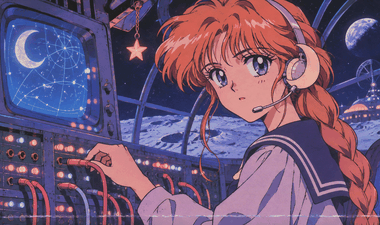

miki-chan's tape shelf * shrine version 3.2 * 2002
Moon Relay

The midnight
switchboard
I taped over Dad's weather report for this frame. Nori's headset lights up one whole second before the phone rings. I checked twice.
~ miki
Tape 03 / tracking a little wobbly / cap by spoolcat
June 8 Found the last six seconds! See the missing caller page.